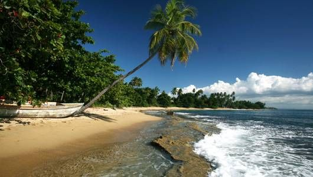

The Future of Mobile Application Development is Me!
I initially, after graduating, went to college at the Interamerican University in Puerto Rico. In my second year I joined the United States Navy. I served 12 years in naval communications. When I left the Navy, I worked as a Defence Contractor; installing, removing, and upgrading combat systems aboard ships.
My love of tech began to grow and I went back to school to Old Dominion University for network systems. I worked for approximately a year building, developing, and administering networks for the Department of the Navy. That is, until a class in Fiber Optics put me on a path to public communications with the phone company. Eight years later it was back to school.
I finished my bachelors degree at the University of Pheonix with a Bachelors of Science in Information Technology. Back into the military I went, Army this time, to finish what I had started so many years ago. The Army made me a diesel mechanic. A skill I didn't know I had or needed. But after eight more years, I finally finished with my military career.
In college I had taken some coding classes and had enjoyed the challenges, variety and creativity that they sparked. Everything was always new and exciting. Researching schools to update my skills, I found Epicodus in a tech article listing it at number one in the top thirty-three in the nation. A little more research and mobile app development(Java, Javascript, and Android to start) here I come.
If you are interested in collaboration, making recommendations or hiring me please feel free to email me!